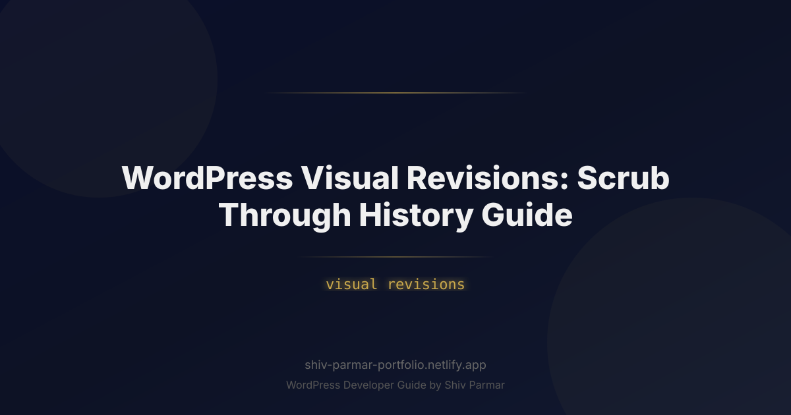

WordPress Visual Revisions: Scrub Through History | Shiv Parmar
Table of Contents
Every digital creator has experienced that cold drop in the stomach: you spend three hours orchestrating an intricate landing page layout, fine-tuning fluid typography, and dialling in nested block arrangements, only for an accidental keystroke, an erratic autosave, or a teammate's conflicting edit to obliterate your work. For over two decades, recovering from these editorial catastrophes in WordPress felt like deciphering ancient runes. You were thrust into a split-screen matrix of raw HTML, squinting at red and green inline diffs to deduce which missing closing tag collapsed your layout.
That paradigm has shifted entirely. With the emergence of WordPress 7.0 and its refined core editing architecture, content creators and developers can now leverage true visual revisions. Instead of parsing abstracted code strings, the platform introduces an interactive timeline scrubber that lets you visually glide through past iterations of your content, layouts, and global styles in real time.
Whether you are an agency managing complex multi-author workflows, an enterprise marketing team updating dynamic landing pages, or an independent developer safeguarding client assets, understanding how to scrub through history and execute a surgical rollback is an indispensable skill. In this comprehensive guide, we will unpack the mechanics of visual history tracking, demonstrate how to navigate the timeline scrubber, explore programmatic controls, and share best practices to keep your database lean while preserving your peace of mind.
What Are WordPress Visual Revisions?
At its core, a revision in WordPress is a historical snapshot of a post, page, or custom post type saved to the wp_posts database table as an inherited record (with the post status set to inherit and the post type set to revision). Traditionally, WordPress compared these snapshots using a textual string-diff utility similar to standard Git diffs. If you moved a paragraph block, adjusted margin tokens, or swapped out a background video, the interface presented you with disjointed strings of Gutenberg block comment delimiters, such as <!-- wp:group {"layout":{"type":"constrained"}} -->.
Visual revisions transform this database state comparison into an interactive, visual canvas. Rather than analyzing plain text, the modern revision engine dynamically hydrates the block parser within an isolated virtual DOM sandbox. As you manipulate the revision slider, WordPress renders the exact visual presentation of the post as it appeared at that specific second—complete with block styles, nested layouts, custom CSS classes, and typography settings.
In modern releases culminating in WordPress 7.0, this functionality extends beyond basic post bodies. The visual revision engine now intercepts mutations across three distinct layers:
- Document-Level Content: Block hierarchies, inner content, embedded media states, and metadata changes across posts, pages, and custom post types.
- Template and Template Part Architecture: Header shifts, footer restructurings, sidebar injections, and query loop configurations modified inside the Site Editor.
- Global Styles and Design Tokens: Color palette reassignments, fluid typography steps, spacing presets, and custom CSS modifications saved to
theme.json.
The system works by tracking serialized JSON trees representing your layout state alongside human-readable metadata, pairing changes with author avatars and precise timestamps down to the second.
| Feature Dimension | Legacy Textual Revisions | WordPress 7.0 Visual Revisions |
|---|---|---|
| Preview Medium | Raw HTML strings with highlighted textual deletions/additions. | Fully rendered, interactive visual sandbox with responsive viewport toggles. |
| Scrubbing Interface | Stepped two-handle slider comparing State A to State B. | Fluid scrubbing timeline with visual thumbnail snapshots and change annotations. |
| Scope of Tracking | Post content (`post_content`) and title fields only. | Block content, templates, template parts, and global design styles (`theme.json`). |
| Rollback Precision | All-or-nothing document reversion. | Granular rollbacks: restore entire documents or isolate specific block trees. |
| Performance Impact | Fast string comparison; unreadable for block layouts. | Client-side rendering via cached block schemas and optimized REST hydration. |
Why Visual Revisions Matter in 2026
The WordPress landscape has transformed from simple blog publishing into an enterprise-grade digital experience platform (DXP). Site designs are no longer static text wrapped in hardcoded PHP wrappers; they are composed of dynamic, deeply nested component trees driven by Full-Site Editing (FSE), block variations, and responsive layout primitives like CSS Grid and Flexbox.
Evaluating layout changes through raw markup in this environment is not only tedious—it invites disaster. If an editor accidentally changes a grid template column configuration from repeat(3, 1fr) to 1fr, spotting that modification inside serialized block comments requires deep developer expertise. Non-technical marketing teams simply cannot verify what changed before clicking a rollback button. Visual revisions bridge this gap by translating code diffs into immediate visual feedback.
Moreover, collaborative environments demand greater clarity. With real-time collaboration and multi-user editorial pipelines becoming standard in modern production environments, dozens of micro-revisions can occur in a single work session. Visual history scrubbing provides teams with an intuitive visual audit log:
- Design System Governance: When a global color or font variable is inadvertently altered across an entire enterprise network, administrators can inspect the Global Styles revision timeline to identify the exact change, who pushed it, and revert the style token without wiping out newly drafted articles.
- Accelerated Editorial Auditing: Legal and compliance teams can rapidly scrub backward through time to verify the exact wording, disclaimer visibility, or imagery displayed on a high-traffic regulatory page at a given point in time.
- Risk-Free Experimentation: Content teams can radically alter page hierarchies, test new conversion flows, and preview variations knowing that an instantaneous, visual rollback is always available.
Step-by-Step Guide: Scrubbing Through History & Mastering Rollbacks
Mastering the visual revision workflow requires understanding both the graphical interface within the editor and the underlying configuration parameters that dictate how WordPress stores historical states.
Step 1: Navigating to the Visual Revisions Interface
To inspect previous states of your content or site design, access the revision panel inside the Block Editor or Site Editor:
- Open the post, page, or custom template you wish to audit.
- Ensure the editor settings sidebar (top-right corner gear or document icon) is visible.
- Select the Post (or Template) tab.
- Locate the Revisions item within the document overview metadata panel. You will see a counter indicating the number of saved snapshots (e.g., "24 Revisions").
- Click directly on the Revisions link. In WordPress 7.0, this action transitions your workspace into the full-viewport Visual History Inspector, temporarily suspending the standard editing canvas.
If you are working inside the Site Editor editing Global Styles, click the Styles icon (half-black, half-white circle), click the three-dots context menu, and choose Style Book History or Revisions to view design-token-specific timelines.
Step 2: Using the Timeline Scrubber and Viewport Inspector
Once inside the Visual Revisions interface, your canvas is divided into three primary zones: the Top Navigation Control Bar, the Central Interactive Preview Sandbox, and the Bottom Timeline Scrubber.
The timeline scrubber at the bottom of the screen displays a chronological axis populated by revision nodes. Each node represents an explicit draft save, an autosave, or a published state update. Nodes are color-coded and marked with user avatars to immediately identify the author behind every action.
To scrub through the document's evolution:
- Click and drag the scrubber playhead across the timeline horizontally. As the playhead glides across timestamps, the central preview updates instantly, displaying the document's exact visual layout at that historical snapshot.
- Use your keyboard arrow keys (Left/Right) for frame-by-frame traversal across sequential saves.
- Toggle the Viewport Switcher in the top navigation bar to test how an older revision performed across Mobile, Tablet, and Desktop viewport widths.
- Enable the Highlight Changes toggle. This overlay mode places subtle colored outlines around updated components: green borders denote added blocks, blue indicates modified style tokens or layout alignments, and dashed red outlines highlight elements slated for removal.
Step 3: Granular Block-Level and Global Style Revisions
A frequent problem in high-velocity publishing is the "destructive full rollback"—restoring an entire document just to recover a single paragraph or pricing table, accidentally discarding all subsequent work. Modern visual revisions resolve this through component-level history scrubbing.
To isolate and scrub an individual block:
- While in the Visual Revisions screen, click directly on the block you wish to restore (such as a complex Grid or Query Loop block).
- Look at the right-hand Inspector Sidebar, which will switch from "Global Document History" to "Block History".
- Review the isolated timeline specifically tied to that block's parent identifier.
- Select the previous iteration that contained your desired content or configuration.
- Click Extract Block to Current Draft. This allows you to cherry-pick that single element out of history and copy it straight into your active draft without touching other sections.
Step 4: Executing a Flawless Rollback
When you have reviewed the timeline and decided that a previous snapshot represents the desired state for your live asset, you can initiate a rollback.
- Locate the exact revision node on the scrubber timeline. Verify the date, timestamp, and author credentials shown in the info drawer.
- Inspect the layout visually in desktop and mobile preview modes to confirm that no third-party block assets (like forms, video players, or custom widgets) are displaying broken states.
- Click the high-contrast Rollback to This Revision button located in the top-right corner.
- WordPress displays a confirmation modal detailing the action. This operation is non-destructive: it creates a new revision containing the historical data, preserving your recent work further down the timeline.
- Click Confirm and Apply. The canvas returns to the active editing mode with the selected revision fully restored, ready for further editing or immediate publication.
Step 5: Programmatic Control: Managing Revisions via Code and REST API
Power users and developers can customize revision tracking behavior programmatically. WordPress provides a suite of configuration constants, hooks, and REST API endpoints to govern how visual snapshots are saved, limited, and queried.
Configuring Snapshot Storage via wp-config.php
By default, WordPress may retain an infinite number of revisions if left unmanaged, which can cause significant database bloat on enterprise sites. You can limit visual revision density or adjust the autosave interval directly in your wp-config.php file:
// Limit the total number of visual revisions per post to 15
define( 'WP_POST_REVISIONS', 15 );
// Extend the autosave interval to 120 seconds to minimize snapshot clutter
define( 'AUTOSAVE_INTERVAL', 120 );
// Completely disable revisions (Not recommended for visual production environments)
// define( 'WP_POST_REVISIONS', false );
Fine-Grained Revision Limits by Post Type
You may want to store 30 revisions for custom landing pages while limiting high-frequency blog posts to 5 snapshots. Use the wp_revisions_to_keep filter in your theme's functions.php or within a custom mu-plugin:
<?php
/**
* Conditionally adjust revision storage thresholds by post type.
*
* @param int $num Number of revisions to keep.
* @param WP_Post $post The post object being evaluated.
* @return int Modified number of revisions.
*/
function prefix_tailor_revision_retention( $num, $post ) {
switch ( $post->post_type ) {
case 'landing_page':
return 30; // High threshold for complex layouts
case 'product':
return 10;
case 'post':
return 5; // Low threshold for daily editorial content
default:
return $num;
}
}
add_filter( 'wp_revisions_to_keep', 'prefix_tailor_revision_retention', 10, 2 );
Querying Visual Revisions via the WordPress REST API
WordPress 7.0 exposes dedicated visual schema representations of revisions via the REST API, allowing decoupled applications or external staging suites to inspect changes programmatically:
// Fetch revisions for post ID 1042 with raw and rendered block contexts
fetch('/wp-json/wp/v2/posts/1042/revisions?context=edit', {
method: 'GET',
headers: {
'Content-Type': 'application/json',
'X-WP-Nonce': wpApiSettings.nonce
}
})
.then(response => response.json())
.then(revisions => {
revisions.forEach(rev => {
console.log(`Revision ID: ${rev.id}`);
console.log(`Authored by: ${rev.author}`);
console.log(`Snapshot Date: ${rev.date}`);
console.log(`Block Content:`, rev.content.raw);
});
})
.catch(error => console.error('Error fetching visual revisions:', error));
Programmatic Rollback via WP-CLI
System administrators managing headless setups or high-volume sites can execute rollbacks straight from the terminal using WP-CLI without loading the graphical interface:
# List all historical revisions available for a post
wp post revision list 1042 --fields=ID,post_date,post_author,post_name
# Perform an immediate rollback to revision ID 2088
wp post revision restore 2088
Best Practices for Visual Revisions
While visual revisions simplify history tracking and design recovery, running an unoptimized revision engine can introduce workflow bottlenecks and database bloat. Implement these engineering best practices to maintain a responsive, dependable environment.
1. Establish Strict Revision Ceilings
Left unchecked, an enterprise site publishing 10 articles a day with 50 revisions per post will accumulate over 180,000 orphaned rows in wp_posts within a single year. This bloats your primary relational table, degrades indexing efficiency, slows database backups, and drags down general query performance.
Cap post revisions between 10 and 20 for standard publishing environments. Use WP-CLI to schedule automated database maintenance that cleans out legacy visual revisions older than 90 days:
# Clean post revisions older than 90 days across the entire network
wp db query "DELETE FROM wp_posts WHERE post_type = 'revision' AND post_modified < DATE_SUB(NOW(), INTERVAL 90 DAY);"
2. Annotate Significant Revisions
Train your editorial and design teams to use Revision Summaries. Whenever an editor executes a major restructuring—such as converting a three-column card grid into an asymmetrical hero section—they should add a brief log message in the Document Settings panel before saving. In modern visual revision timelines, these notes appear as labeled flags above the scrubber nodes, helping teammates quickly find key historical moments without having to scrub through micro-drafts.
3. Use Staging for Massive Architecture Overhauls
While visual revisions can easily restore single-page structural layouts, they should not replace a dedicated staging environment when performing wholesale site refactors. Rolling back a major template that shares dependencies with un-reverted child blocks or custom theme plugins can lead to schema mismatches. Use visual revisions for editorial rollbacks and style corrections; leave broad site redesigns to Git-backed staging pipelines.
4. Audit Global Styles Separately from Content
Global styles affect your entire site footprint simultaneously. Before restoring a global style revision, navigate through multiple diverse page templates in the visual preview—such as archives, single commerce pages, and static contact forms. This ensures that rolling back a global button radius or padding variable doesn't inadvertently break forms or call-to-action sections elsewhere.
Common Mistakes to Avoid
Even seasoned WordPress developers and editors can fall into subtle traps when managing visual revisions and executing rollbacks. Avoid these frequent missteps:
Assuming Media Deletions Will Roll Back
Visual revisions track the layout state and references to media items, but they do not store binary image or video assets. If an author deletes a high-resolution banner image from the WordPress Media Library and subsequently rolls back to a revision that featured that image, the restored block will display a broken 404 image placeholder. Always retain your original media files in your media storage library or offsite bucket, even when swapping assets out of a page layout.
Confusing Autosaves with Explicit Revisions
WordPress maintains two different types of working memory: regular explicit revisions and temporary autosaves. An autosave occurs automatically in the background while you work. Each user account has access to only one active autosave per post at any time; every new autosave replaces the previous one. If you make a series of structural missteps relying solely on autosaves without manually hitting "Save Draft", you cannot scrub backward through those intermediate steps. Save draft states manually before testing complex layout modifications.
Overlooking Third-Party Dynamic Block Dependencies
Not every block is fully static. Many modern plugins—including dynamic pricing tables, event calendars, and form builders—fetch data dynamically from custom database tables or external REST/GraphQL APIs. When you roll back a page using visual revisions, you are restoring the block's layout configuration attributes, not the external dynamic data it references. If a third-party form ID referenced inside a historical revision has been deleted from that plugin's database table, the restored layout will fail to render the form correctly.
Neglecting Database Transients and Cache Layers
Executing a rollback in your editor immediately updates your database record, but aggressive server-side caching (Varnish, Redis object caches, or Cloudflare Edge caches) may continue serving the prior cached HTML payload to end users. If a rollback is triggered to fix a critical styling or content error, always ensure your deployment automatically purges the specific object and page cache URLs:
<?php
/**
* Automatically purge edge cache when a post revision is restored.
*
* @param int $post_id The parent post ID.
* @param int $revision_id The ID of the revision restored.
*/
function prefix_purge_cache_on_revision_rollback( $post_id, $revision_id ) {
// Check if an external caching engine is present
if ( function_exists( 'wp_cache_post_change' ) ) {
wp_cache_post_change( $post_id );
}
// Example: Trigger Cloudflare or local reverse proxy hook
do_action( 'custom_purge_post_cache', $post_id );
}
add_action( 'wp_restore_post_revision', 'prefix_purge_cache_on_revision_rollback', 10, 2 );
Ignoring User Permissions and Access Control
Not all contributors should have unrestricted authority to roll back published content. A standard Contributor or Author could accidentally revert critical SEO metadata, schema markup, or layout templates updated by an Administrator. Audit your user roles using a capability manager plugin or custom code, ensuring that the edit_others_posts and publish_posts capabilities are strictly guarded for users operating in sensitive environments.
Conclusion
This guide covered everything you need to know about WordPress Visual Revisions: Scrub Through History Guide. By following these steps, you can implement these solutions on your WordPress site today.
If you need help with WordPress development, WooCommerce, or performance optimization, feel free to reach out. I work with clients worldwide and deliver high-quality results.